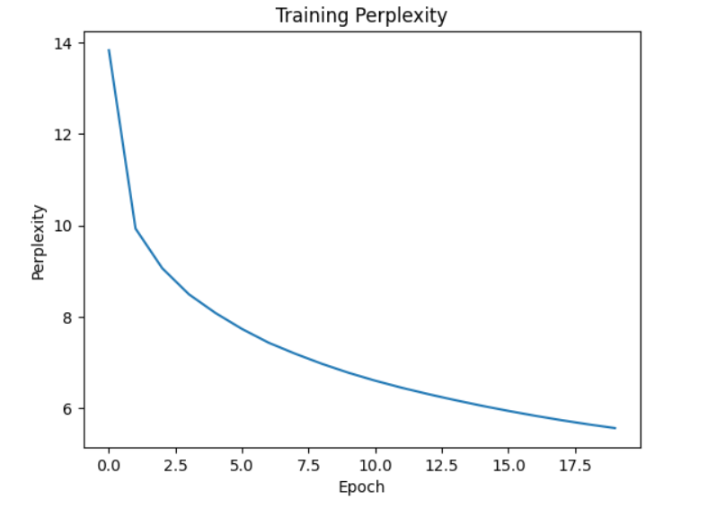

Student: Yahani Perera
Course: CS180
The goal of Part 1 was to implement a vanilla recurrent neural network from scratch and train it on the time machine dataset. The purpose was to study the effects of hyperparameter tuning, gradient clipping, and activation functions on model performance measured by validation perplexity.
Character-level tokenization was used, where each character is treated as an individual token. Long sequences were partitioned into fixed length to allow efficient mini-batch maintenance and temporal continuity.
We trained a basic RNN with the following hyperparameters: hidden units = 256, learning rate = 1.0, time steps per minibatch = 35, batch size = 32, epochs = 20, and gradient clipping = 1.0. The training perplexity decreased from 13.83 in Epoch 1 to 5.57 by Epoch 20, showing the model effectively learned sequential patterns.
Epoch 1, Perplexity 13.83
Epoch 2, Perplexity 9.93
Epoch 3, Perplexity 9.07
Epoch 4, Perplexity 8.49
Epoch 5, Perplexity 8.08
Epoch 6, Perplexity 7.73
Epoch 7, Perplexity 7.43
Epoch 8, Perplexity 7.19
Epoch 9, Perplexity 6.97
Epoch 10, Perplexity 6.78
Epoch 11, Perplexity 6.60
Epoch 12, Perplexity 6.45
Epoch 13, Perplexity 6.31
Epoch 14, Perplexity 6.18
Epoch 15, Perplexity 6.06
Epoch 16, Perplexity 5.94
Epoch 17, Perplexity 5.84
Epoch 18, Perplexity 5.74
Epoch 19, Perplexity 5.65
Epoch 20, Perplexity 5.57

Training perplexity remained constant at 6.33 for all 20 epochs. The model failed to learn effectively because exploding gradients destabilized training.
Epoch 1-20, Perplexity 6.33
Training perplexity decreased from 14.23 to 4.26, showing stable and effective learning.
Epoch 1, Perplexity 14.23
Epoch 2, Perplexity 9.64
Epoch 3, Perplexity 8.28
Epoch 4, Perplexity 7.45
Epoch 5, Perplexity 6.87
Epoch 6, Perplexity 6.41
Epoch 7, Perplexity 6.05
Epoch 8, Perplexity 5.75
Epoch 9, Perplexity 5.50
Epoch 10, Perplexity 5.29
Epoch 11, Perplexity 5.12
Epoch 12, Perplexity 4.97
Epoch 13, Perplexity 4.83
Epoch 14, Perplexity 4.72
Epoch 15, Perplexity 4.62
Epoch 16, Perplexity 4.52
Epoch 17, Perplexity 4.45
Epoch 18, Perplexity 4.39
Epoch 19, Perplexity 4.33
Epoch 20, Perplexity 4.26
Training also decreased successfully. ReLU can accelerate learning but may increase gradient magnitude, so clipping remains essential. The best results were obtained with Tanh + gradient clipping.


In Part 2 we implemented gated recurrent units (GRU) on the time machine dataset to study hyperparameters and gating mechanisms on training and validation perplexity.
Perplexity decreased steadily across epochs as GRU learned sequential dependencies. Increasing hidden units and number of steps helped improve performance. Higher learning rates accelerated convergence while maintaining stability.
Example: hidden units = 512, learning rate = 1.5, num steps = 50 → final perplexity = 5.30.

The full GRU achieved the lowest training and validation perplexity. Using only reset gate or only update gate degraded performance. This demonstrates that both gates are essential for modeling sequential data effectively. Reset gate helps selectively forget irrelevant information; update gate preserves memory over time.

The Project 2 illustrated key principles in modern recurrent neural networks: the critical role of hyperparameter tuning, the impact of activation functions and gradient control, and the architectural advantages of gated RNNs for handling sequential data. By experimenting with these models on a character-level dataset, we gained practical insights into the challenges and strategies for building effective sequence models.